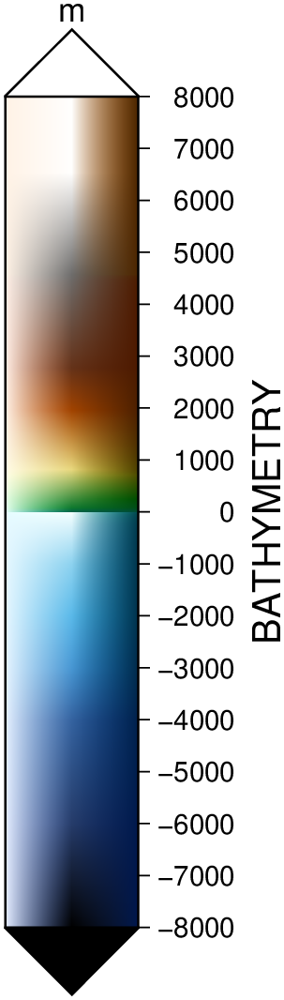

using GMT
makecpt(range=(-200,1000,100), cmap=:rainbow)
colorbar(pos=(paper=true, anchor=(8,1), size=(12,0.5), justify=:TC, horizontal=true),
frame=(annot=:auto, ticks=:auto, xlabel="topography", ylabel=:km), show=true)
colorbar(arg1=nothing; kwargs...)Plot a gray or color scale-bar on maps
Plots gray scales or color scales on maps. Both horizontal and vertical scales are supported. For CPTs with gradational colors (i.e., the lower and upper boundary of an interval have different colors) we will interpolate to give a continuous scale. Variations in intensity due to shading/illumination may be displayed by setting the option shade. Colors may be spaced according to a linear scale, all be equal size, or by providing a file with individual tile widths. The font used for the annotations along the scale and optional units is specified by FONT_ANNOT_PRIMARY. If a label is requested, it is plotted with FONT_LABEL.
D or pos or position : – pos=(map=true, inside=true, outside=true, norm=true, paper=true, anchor=XX, size=XX, triangles=true, justify=code, offset=XX, horizontal=true, move_annot=true[:a|:l|:u], neon=true, nan=true)
Defines the reference point on the map for the color scale using one of four coordinate systems: (1) Use map=true for map (user) coordinates, (2) use inside=true or outside=true (the default) for setting anchor via a 2-char justification code that refers to the (invisible) map domain rectangle, (3) use norm=true for normalized (0-1) coordinates, or (4) use paper=true for plot coordinates (inches, cm, etc.). All but paper=true requires both region and proj to be specified.
For inside or outside with codes TC, BC, ML, MR (i.e., centered on one of the map sides) we pre-calculate all further settings. Specifically, the length is set to 80% of the map side, horizontal or vertical depends on the side, the offset is MAP_LABEL_OFFSET for outside with an extra offset MAP_FRAME_WIDTH for outside, and annotations are placed on the side of the scale facing away from the map frame. However, you can override any of these with these modifiers. Use size=(length,width) to set the color bar size. If width is not specified then it is set to 4% of the given length. Give a negative length to reverse the scale bar. Use horizontal=true to get a horizontal scale [Default is vertical]. By default, the anchor point on the scale is assumed to be the bottom left corner (BL), but this can be changed by justify=code where code is a 2-char justification code (see text). Note: with the default outside=true, the justify defaults to the same as anchor, if inside=true is used then justify defaults to the mirror opposite of anchor. Finally,add offset=(dx,dy) to offset the color scale by dx, dy away from the anchor point in the direction implied by justify (or the direction implied by inside or outside). Add sidebar triangles for back- and/or foreground colors with triangles=true. Use triangles=:f (foreground) or triangles=:b (background) for only one sidebar triangle [Default gives both]. Optionally,append triangle height [Default is half the barwidth]. Move text to opposite side with move_annot=true[:a|:l|:u]. Horizontal scale bars: Move annotations and labels above the scale bar [Default is below]; the unit remains on the left. Vertical scale bars: Move annotations and labels to the left of the scale bar [Default is to the right]; the unit remains below. Append one or more of a, l or u to control which of the annotations, label, and unit that will be moved to the opposite side. Use neon=true if you want to print a vertical label as a column of characters (does not work with special characters). Append nan=true to plot a rectangle with the NaN color at the start of the bar, use text instead of true to change label from NaN.
B or axes or frame
Set annotation, tick, and gridline interval for the colorbar. More at [frame] The x-axis label will plot beneath a horizontal bar (or vertically to the right of a vertical bar), except when using the move_annot modifier of the pos option. As an option, use the y-axis label to plot the data unit to the right of a horizontal bar (and above a vertical bar). When using frame=(annot=:auto,) or frame=(annot=:auto,ticks=:auto) annotation and/or minor tick intervals are chosen automatically. If frame is omitted, or no annotation intervals are provided, the default is to annotate every color level based on the numerical entries in the CPT (which may be overridden by ULB flags in the CPT). The exception to this rule is for CPT files that were scaled to fit the range of a grid exactly and thus have arbitrary color levels; these will trigger an automatic frame=(annot=:auto,ticks=:auto) setting. To specify custom text annotations for intervals, you must append ; annotation to each z-slice in the CPT.
C or color or cmap : color=cpt
Note: If not given, the module will check if we have a valid current_cpt stored in memory (makecpt does store it). If there is one, fine, otherwise GMT will error. Where cpt is the CPT to be used. By default all color changes are annotated. To use a subset, add an extra column to the CPT with a L, U, or B to annotate Lower, Upper, or Both color segment boundaries (but see frame). We can understand pattern specifications in the CPT. For CPTs where the z range is in meters, it may be useful to change to another unit when plotting. To do so, append +Uunit to the file name. Likewise, if the CPT uses another unit than meter and you wish to plot the CPT versus meters, append +uunit. If a GMT master dynamic CPT is given instead then its z-range will be set to its default range (if it has one) before plotting.
F or box : – box=(clearance=val, fill=color, inner=true, pen=pen, rounded=true, shaded=XX)
Without further options, draws a rectangular border around the scale using MAP_FRAME_PEN; specify a different pen with pen=pen, (see [Pen attributes]). Add fill=color, where color is any valid color setting (see [Setting color]), to fill the scale panel [no fill]. Add clearance=val where val is either gap or (xgap,ygap), or (lgap,rgap,bgap,tgap) where these items are uniform, separate in x- and y-direction, or individual side spacings between scale and border. Use inner=true to draw a secondary, inner border as well. We use a uniform gap between borders of 2p and the MAP_DEFAULTS_PEN unless other values are specified (like inner=“gap/pen”). Add rounded=true to draw rounded rectangular borders instead, with a 6p corner radius. You can override this radius by using another value instead of true. Finally, use shadded=true or shadded=(dx,dy) or shadded=shade to draw an offset background shaded region. Here, dx/dy indicates the shift relative to the foreground frame [4p/-4p]and shade sets the fill style to use for shading (“gray50”).
G or truncate : – truncate=(zlo,zhi)
Truncate the incoming CPT so that the lowest and highest z-levels are to zlo and zhi. If one of these equal NaN then we leave that end of the CPT alone. The truncation takes place before the plotting.
I or shade : – shade=true | shade=max_intens | shade=(low_i,high_i)
Add illumination effects. Optionally, set the range of intensities from - to shade=max_intens. If not specified, 1 is used. Alternatively, use shade=(low,high) intensities to specify an asymmetric range [Default is no illumination].
J or proj or projection : – proj=
Select map projection. More at proj
L or equal or equal_size : – equal=true | equal=(range=true, gap=val)
Gives equal-sized color rectangles. Default scales rectangles according to the z-range in the CPT (Also see zfile). If set, any equal interval annotation set with frame will be ignored. If equal=(gap=val,) is appended and the CPT is discrete we will center each annotation on each rectangle, using the lower boundary z-value for the annotation. If equal=(range=true,) is prepended we annotate the interval range instead. If shade is used then each rectangle will have its constant color modified by the specified intensity.
M or monochrome : – monochrome=true
Force a monochrome graybar using the (television) YIQ transformation.
N or dpi : – dpi=true | *dpi=:p | dpi=number
Controls how the color scale should be encoded graphically. To preferentially draw color rectangles (e.g., for discrete colors), use dpi=:p. Otherwise we will preferentially draw images (e.g., for continuous colors). Optionally use dpi=number** effective dots-per-inch for rasterization of color scales [600].
Q or log : – log=true
Select logarithmic scale and power of ten annotations. All z-values in the CPT will be converted to p = log10(z) and only integer p values will be annotated using the 10^p format [Default is linear scale].
R or region or limits : – limits=(xmin, xmax, ymin, ymax) | limits=(BB=(xmin, xmax, ymin, ymax),) | limits=(LLUR=(xmin, xmax, ymin, ymax),units=“unit”) | …more
Specify the region of interest. More at limits. For perspective view view, optionally add zmin,zmax. This option may be used to indicate the range used for the 3-D axes. You may ask for a larger w/e/s/n region to have more room between the image and the axes.
S or nolines or appearance : – nolines=true
Do not separate different color intervals with black grid lines.
U or time_stamp : – time_stamp=true | time_stamp=(just=“code”, pos=(dx,dy), label=“label”, com=true)
Draw GMT time stamp logo on plot. More at timestamp
V or verbose : – verbose=true | verbose=level
Select verbosity level. More at verbose
W or scale : – scale=true
Multiply all z-values in the CPT by the provided scale. By default the CPT is used as is.
X or xshift or x_offset : xshift=true | xshift=x-shift | xshift=(shift=x-shift, mov=“a|c|f|r”)
Shift plot origin. More at xshift
Y or yshift or y_offset : yshift=true | yshift=y-shift | yshift=(shift=y-shift, mov=“a|c|f|r”)
Shift plot origin. More at yshift
Z or zfile : zfile=“file”
File with colorbar-width per color entry. By default, width of entry is scaled to color range, i.e., z = 0-100 gives twice the width as z = 100-150 (Also see equal).
figname or savefig or name : – figname=name.png
Save the figure with the figname=name.ext where ext chooses the figure image format.
To plot a horizontal color scale (12 cm long; 0.5 cm wide) at the reference point (8,1) (paper coordinates) with justification at top center and automatic annotation interval, do
using GMT
makecpt(range=(-200,1000,100), cmap=:rainbow)
colorbar(pos=(paper=true, anchor=(8,1), size=(12,0.5), justify=:TC, horizontal=true),
frame=(annot=:auto, ticks=:auto, xlabel="topography", ylabel=:km), show=true)
To append a vertical color scale (7.5 cm long; 1.25 cm wide) to the right of a plot that is 6 inch wide and 4 inch high, using illumination, and show back- and foreground colors, and annotating every 5 units, we provide the reference point and select the left-mid anchor point via
colorbar(pos=(paper=true, anchor="6.5i/2i", justify=(:LM,"2i"), size=(7.5,1.2), triangles=true),
cmap=:geo, shade=true, xaxis=(annot=1000, label=:BATHYMETRY), ylabel=:m, show=1)
To overlay a horizontal color scale (10 centimeters long and default width) above a Mercator map produced by a previous call, ensuring a 2 cm offset from the map frame, use
colorbar!(region=(0,10,0,10), pos=(justify=:CT, width=10, offset=(0,2), horizontal=true), cmap="colors.cpt", show=1)psscale [ERROR]: GMT_Read_Data: File not found: colors.cptSomething went wrong when calling the module. GMT error number = 16 Stacktrace: [1] error(s::String) @ Base .\error.jl:35 [2] gmt(cmd::String, args::Nothing) @ GMT C:\Users\j\.julia\dev\GMT\src\gmt_main.jl:166 [3] finish_PS_module(d::Dict{Symbol, Any}, cmd::Vector{String}, opt_extra::String, K::Bool, O::Bool, finish::Bool, args::Nothing) @ GMT C:\Users\j\.julia\dev\GMT\src\common_options.jl:4505 [4] finish_PS_module @ C:\Users\j\.julia\dev\GMT\src\common_options.jl:4429 [inlined] [5] prep_and_call_finish_PS_module @ C:\Users\j\.julia\dev\GMT\src\common_options.jl:4419 [inlined] [6] prep_and_call_finish_PS_module @ C:\Users\j\.julia\dev\GMT\src\common_options.jl:4418 [inlined] [7] colorbar(arg1::Nothing; first::Bool, kwargs::@Kwargs{region::NTuple{4, Int64}, pos::@NamedTuple{justify::Symbol, width::Int64, offset::Tuple{Int64, Int64}, horizontal::Bool}, cmap::String, show::Int64}) @ GMT C:\Users\j\.julia\dev\GMT\src\psscale.jl:53 [8] colorbar @ C:\Users\j\.julia\dev\GMT\src\psscale.jl:50 [inlined] [9] colorbar! @ C:\Users\j\.julia\dev\GMT\src\psscale.jl:94 [inlined] [10] top-level scope @ In[4]:1
Show automatic placement of color bars when selecting a side mid-point.
C = makecpt(cmap=:jet, range=(0,100));
basemap(region=(0,30,0,45), frame=(axes=:wsne, annot=:auto, ticks=:auto))
colorbar!(position=(inside=true, anchor=:BC), xaxis=(annot=:auto, ticks=:auto),
box=(pen=(0.25,:red),), ylabel="@.C", cmap=C)
colorbar!(position=(outside=true, anchor=:BC), box=(pen=(0.25,:red),), ylabel="@.C", cmap=C)
colorbar!(position=(inside=true, anchor=:TC), box=(pen=(0.25,:red),), ylabel="@.C", cmap=C)
colorbar!(position=(outside=true, anchor=:TC), box=(pen=(0.25,:red),), ylabel="@.C", cmap=C)
colorbar!(position=(inside=true, anchor=:ML), box=(pen=(0.25,:red),), ylabel="@.C", cmap=C)
colorbar!(position=(outside=true, anchor=:ML), box=(pen=(0.25,:red),), ylabel="@.C", cmap=C)
colorbar!(position=(inside=true, anchor=:MR), box=(pen=(0.25,:red),), ylabel="@.C", cmap=C)
colorbar!(position=(anchor=:MR,), box=(pen=(0.25,:red),), ylabel="@.C", cmap=C, show=true)
This function has multiple methods:
colorbar(; ...) - psscale.jl:50colorbar(arg1::Union{Nothing, GMTcpt}; first, kwargs...) - psscale.jl:50